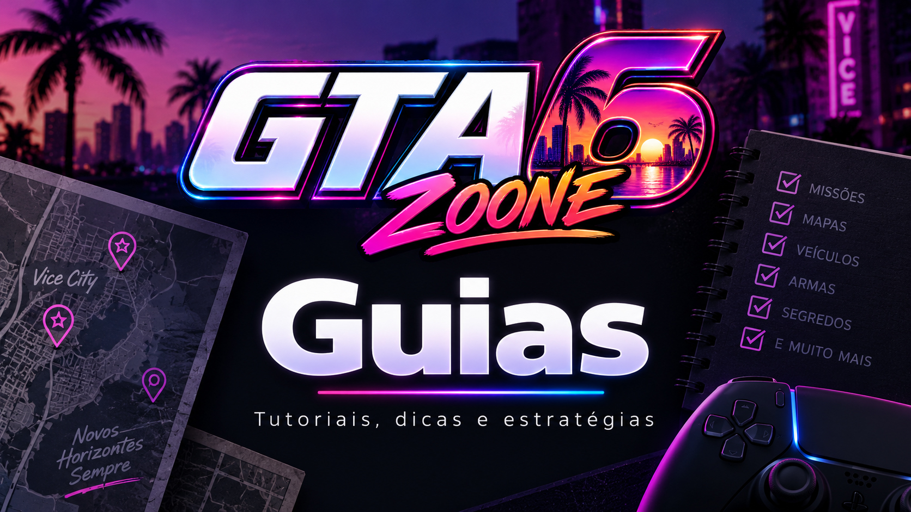
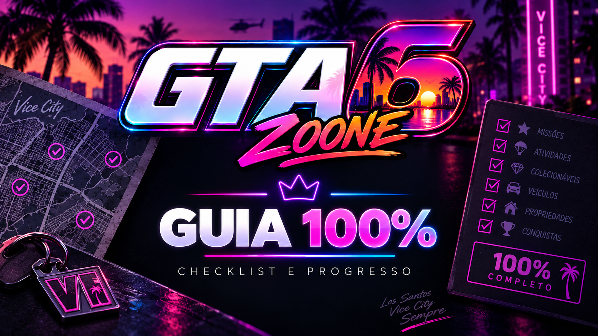

Guias de GTA VI
Passo a passo, dicas, localizações, estratégias e respostas para ajudar você a aproveitar cada parte de Grand Theft Auto VI.
Aqui reuniremos guias produzidos a partir de informações verificadas, testes no jogo, screenshots e gameplays próprios do GTA6Zoone.
WIKI E GUIAS TÊM FUNÇÕES DIFERENTES: a Wiki explica o que é cada elemento de GTA VI. Os Guias explicam como fazer, como encontrar, como conseguir e como completar.

O que você quer fazer?
Pesquise personagens, locais, veículos, notícias e futuros guias do GTA6Zoone.
Encontre o guia certo
Cada categoria possui seu próprio índice e poderá reunir dezenas ou centenas de guias individuais.
Primeiros passos
Controles, sistemas básicos, configurações e ajuda para começar GTA VI.
Ver guias →Dinheiro e economia
Guias sobre formas de ganhar, gastar e administrar dinheiro dentro do jogo.
Ver guias →Missões e passo a passo
Objetivos, estratégias, caminhos e soluções para as missões de GTA VI.
Ver guias →
Veículos
Como encontrar, conseguir, utilizar e futuramente comparar veículos.
Ver guias →Armas e equipamentos
Guias de obtenção, utilização e comparação de equipamentos.
Ver guias →Segredos e mistérios
Descobertas, locais escondidos, mistérios e detalhes que merecem uma investigação mais profunda.
Ver segredos →Easter Eggs e referências
Referências, homenagens, piadas internas e detalhes escondidos encontrados em GTA VI.
Ver Easter Eggs →
Complete GTA VI
Checklist e organização para acompanhar tudo o que for necessário para completar o jogo em 100%.
Ver Guia 100% →Guias feitos para resolver uma dúvida
Cada guia será criado para responder uma pergunta ou objetivo específico sem obrigar o visitante a procurar a resposta em uma página enorme.
A informação principal fica logo no começo.
Instruções organizadas para executar a tarefa.
Screenshots e localização quando forem úteis.
Vídeos próprios do GTA6Zoone poderão acompanhar o guia.
Tudo conectado
Os guias não ficarão isolados. Sempre que fizer sentido, cada guia terá ligação com sua respectiva página da Wiki, local e mapa.
Dessa forma, o visitante poderá navegar entre informação, localização e passo a passo sem ficar preso em uma única seção.
Descobertas e conclusão
Algumas áreas possuem identidade própria e também estarão ligadas aos guias.
Guias do Online terão área própria
Esta central é dedicada ao GTA VI single-player. Os futuros guias relacionados à experiência Online terão estrutura própria para não misturar missões, propriedades, atividades e outros sistemas.
/online/guias/